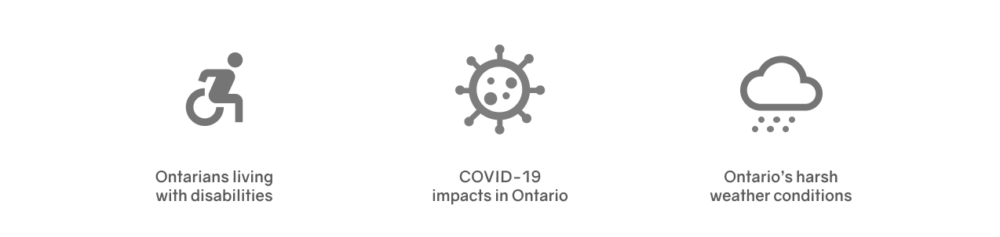

LineUp
LineUp is a remote queuing system that lets users stand in line virtually, waiting remotely from an area of their choice.
Role UX/UI Designer, UX Researcher
Duration 1 month
Tools Figma, Adobe Illustrator, Miro
Background
As many establishments began operating at a reduced capacity due to COVID-19, I started to see more and more lines pop-up outside of buildings throughout Ontario.
My decision to design a remote queuing system was born from my own frustrations as somebody who always finds herself standing in a line. With everything being integrated with technology these days, why hasn’t the mundane task of waiting in line made that bridge?
In this case study, I explore the accessibility concerns that come with the traditional queuing system and how we might digitize this task to make it an inclusive experience.
Problem
Physically waiting outside of an establishment is an activity that not everybody can experience comfortably.
Standing in one spot for a long period of time is an activity that not everyone’s bodies can perform.
Standing alone in an unfamiliar area is an activity that not everybody is comfortable with.
Standing outside in the cold is an activity that favours people who can afford a warm jacket.
To stand in line is a privilege that is often overlooked.
Design Process
The design process used in this project was the Double Diamond design process. I started by researching and analysing the situation to help define a meaningful problem statement. Once the problem statement was established, I started the design process by ideating and prototyping possible solutions.

RESEARCH
Discover
Who is LineUp for?
LineUp is for any Ontarian who experiences discomfort with the traditional physical queuing experience.
These may be permanent, temporary, or situational discomforts that are faced.
Research
To get a better understanding of how I can design this app, I conducted 20 in-depth interviews with potential users in Ontario to analyze their thoughts on the traditional physical queuing experience. The interviewees were drawn at random and aged 18 to 67 living in Ontario, with occupations such as: students, front-line workers, essential workers, office workers, job-seekers, and retirees.
After reviewing the interview answers and conducting additional secondary research, I concluded 3 major flaws around the current physical queuing experience that Ontarians face:
1. Ontarians living with disabilities
Recent studies have shown that 15% of Ontarians have a disability
most common being mobility related. According to the Accessibility for Ontarians with a Disability Act (AODA),
every waiting area must have at least one accessible space
to accommodate people who use mobility devices. The accessible waiting area must also be integrated with the general waiting area so that everyone can wait together.
Despite the AODA requirements, most establishments do not have adequate queuing areas that are maximized for mobility devices.
Many of lineups in Ontario are makeshift sections along the sidewalks
which do not comply with AODA standards.
Queuing areas should also ideally include railings and seatings to provide support for those who may have difficulty standing for extended periods of time.
2. COVID-19 impacts in Ontario
Original physical distancing measures set by Public Health Ontario suggest
Ontarians to keep at least 2 meters away from one another.
Shops, restaurants, malls, and all other establishments in Ontario are required to have stickers and signs to reinforce proper distancing.
With emerging variant strains that are discovered to be more contagious, it is now advised to
keep even further away from each other due to its increased transmissibility. Unfortunately, many establishments do not enforce proper social distancing, there have been many stories from users all over Ontario reporting improper distancing measures at major establishments. Catching COVID-19 and recovering from its symptoms is a privilege that not everybody has.
3. Ontario's harsh weather conditions
Ontario is notorious for its extreme weathers, with average winter temperatures falling to around 0° Celsius (32° Fahrenheit) and summer temperatures rising to an average of 30°Celsius (86° Fahrenheit). Waiting outside for extended periods of time under harsh weather conditions subjects Ontarians to unnecessary discomforts and possible weather related health risks (heat stroke, frost bites, etc). Something we need to take into account is that not all Ontarians are equipped with the proper clothing fit for certain temperatures (an individual who cannot afford a winter jacket, an individual who forgot to check the temperature before leaving their house, etc).
Real Life Analysis - Overnight Line Ups
To help me visualize how the LineUp app might be used in real life, I decided to look into a recent physical queuing situation that could have been avoided had the experience included the LineUp app.
On April 19th 2021, residents living in North York, Ontario, a COVID-19 hot spot neighborhood in Ontario, camped outside for hours overnight in front of the Parkway Forest Community Centre to secure their names on a list in order to receive a vaccine.
The line which consisted of hundreds of people stretched around the community center and onto sidewalks and parking lots, blocking incoming pedestrians and cars. Many of these Ontarians report sleeping outside in chairs or sidewalks without access to running water or sanitary materials.
I reached out to several North York residents who were unable to participate in the lineup to understand more of why they couldn’t attend:
“As somebody who is 64 years old and an organ transplant recipient, I did not want to risk being exposed to the virus overnight”
- Anonymous interviewee
“I am new to the area and don’t have many local friends yet, I didn’t feel too safe waiting outside overnight next to a bunch of strangers”
- Anonymous interviewee
“I work nights as a janitor and I couldn’t take the time off work that day”
- Anonymous interviewee
I then interviewed some volunteers who participated in the overnight queuing experience and mapped out their average flow by creating a task analysis diagram:
Devising a task analysis for the overnight lineup helps identify specific pain points and flaws with the overnight queuing experience.
General Task Analysis Diagram
I created another task analysis diagram to map out a general flow of how the LineUp app can translate into a user’s queuing experience
DEFINE
Problem Statement
As I reviewed the data collected from my primary and secondary research, I realized that all Ontarians, regardless of their background, can be subjected to some kind of discomfort with the traditional queuing experience (waiting in a physical line), this poses the question:
“How might we reduce the permanent, temporary, or situational discomfort that Ontarians experience with the traditional queuing system?”💡
IDEATE
Exploring Ideas
Personas
Different Modes
For this project, I decided to create 2 modes of the app:
1. Customer mode - The mode intended for the user waiting in the queue to use (browsing queues, reviewing queues, joining queues)
2. Establishment mode - The mode intended for the user managing the establishment to use (adding users, admitting users, managing queues)
User Flows
DELIVER
Design
Low-Fidelity Prototypes

Usability Study
Details
Task User (customer) exploring the homepage of the app to find a desired queue, once found, user will then join the queue
Type Unmoderated usability study
Location Ontario, Canada
Length 30 minutes
Participants 10
Places to Refine
1. Sudden confirmation
Users expressed that by pressing the "join queue" button, their place in the line was immediately confirmed
The users preferred to be lead to a review/summary screen before the final confirmation, this way they can make necessary changes if needed before fully committing
2. Multiple guests
Users prefer an option to fill out the number of guests in their party
Some users queue in line with multiple people (ie. A mother queuing with her 2 children), by letting the store know how many people is in their party, the store is more easily able to accommodate for the maximum capacity
3. Map view
Users expressed how having their options presented on a map would help with efficiency, preferring the home page to be in a map view format
Most users join queues that they are already nearby, by having the options presented in a map view, the users can easily look around to see the options near them
Post-Usability Study Revisions
SOLUTION
Visual Design
Color Inspiration
Style Guide
High-Fidelity Wireframes
Key Features
Customer Mode UI
Find queues through the map
Upon opening the application, users are presented with a map view where they can look up nearby queues through the search bar or through using the categories feature.
Join desired queues
Users can review the queue details and store information such as wait time, number of people in line, serviceability, and accessibility- this gives users a better understanding of the current situation before going through with the decision to queue.
Users are also able to enter the number of people they are queuing with before joining the queue, this gives the establishment a better understanding of the amount of people that will be let in once the user is admitted.
Establishment Mode UI
Admit users
Users navigating the Establishment mode can have a quick view of the in-queue and in-store statistics to ensure proper capacity levels before admitting the customers.
Manually insert a user into the queue
89% of Ontarians own a smartphone what about that remaining 11%?
A possible way to resolve this issue is to have a manual insert feature on the manager’s dashboard, this way, people who do not own smartphones can be manually inserted into the system, given a wait time estimate, then wait in an area of their choosing.
The manual insert feature will also come in handy for those who own a smartphone but are not able to access it at the time of queuing (forgot it at home, battery died, poor connection, etc).
Takeaways
Working on this project really opened my eyes to in the inequalities people experience with everyday tasks and how technology can be used to alleviate some of the discomforts people face. Something I had noticed while working on this project was that we need to be careful when designing digital solutions, we need to be careful to not exclude certain groups of people who do not have access to technology. This helped me understand that when creating a digital solution for an offline experience, it's always important to consider those who might be excluded from the "solution" and how we can avoid situations like these.